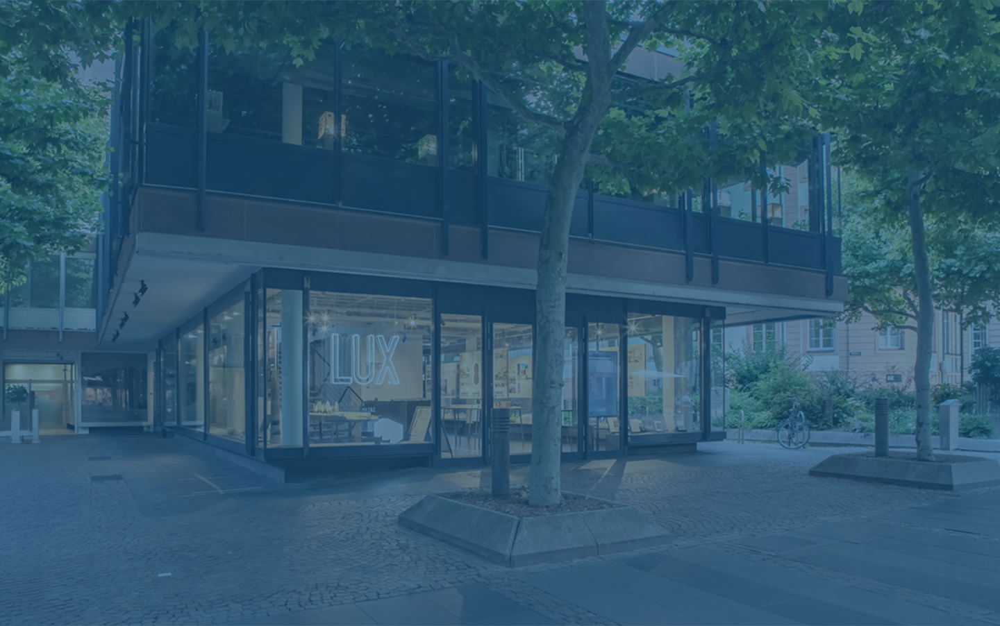

FOR AUTHORS
For presenters
Presentation guidelines
There is no mandatory presentation template for the conference. Contributors may use their own institutional or project templates. Authors who would like to include the FAIR 3D Heritage conference logo in their slides can download the official logo files below.
Oral presentations
Due to the high number of accepted papers, the time for each oral presentation is limited to 15 minutes. This is planned as approximately 10 minutes for the presentation and 5 minutes for questions. If a presentation exceeds 10 minutes, the time available for questions will be shortened accordingly.
We recommend sending the presentation file to the organisers by 11 September 2026 as a backup copy. Presentations are planned to be streamed live online, and recordings are planned to be published later on the conference website. The relevant consent forms for the recording and publication of presentations will be provided at the conference registration desk.
Poster presentations
Poster presenters are also asked to prepare a short presentation of approximately 6 minutes introducing their topic. Poster presentations will be grouped into thematic spotlight sessions and will not include individual questions directly after each presentation. Instead, they will introduce a joint discussion in one of two thematic blocks: “Documentation and infrastructures for digital 3D models” or “Web visualisation, education and public outreach for 3D models”.
Poster presenters should be prepared to take part in the panel discussion and to relate their contribution to the questions and thematic areas described in the Call for Papers. Physical posters should be brought to the conference on the first day and mounted by the authors in the exhibition area with assistance from the registration team. Posters should be prepared in A1 format. Detailed poster preparation guidelines are available below.
Book of Abstracts
All accepted abstracts should be revised after the review process and submitted to the organisers using the abstract template provided below. Revised abstracts should be submitted by 30 June 2026.
The abstracts will be published on the conference website. A preliminary Book of Abstracts will then be prepared and published on Zenodo. This publication is planned for September 2026.
Proceedings
Selected authors will be invited to submit a full paper for an open access proceedings volume to be published in the book series Computing in Art and Architecture (CAaA) in arthistoricum.net provided by the Heidelberg University Library.
Only contributions presented in the oral sessions will be considered for the proceedings. These presentations will be evaluated by the session chairs during the conference. Selected contributors will be invited after the conference to prepare a full paper using a layout prepared in cooperation with arthistoricum.net.
Full papers will undergo a double-blind peer review process. Authors will be asked to follow provided formatting guidelines, and further details will be provided together with the invitation. For the double-blind process, author names and affiliations must be removed from the submitted manuscript.
The detailed review workflow and exact deadlines will be announced at a later stage. The proceedings publication is planned for 2027.